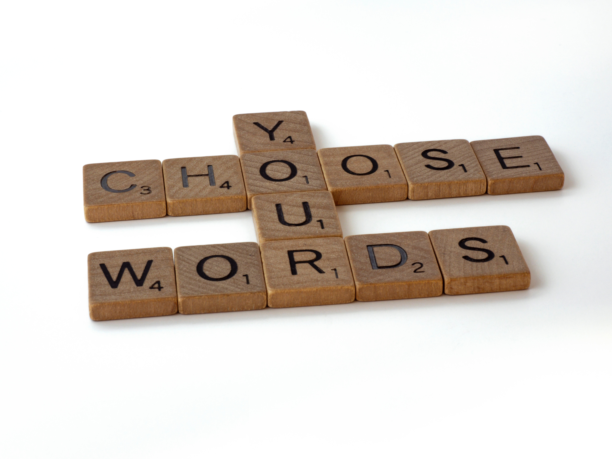

Navigation

Photo by Brett Jordan on Unsplash.
Word of the Week
Word of the Week is based on SPL’s Word of the Month, an optional equity, diversity, and inclusion (EDI) training for staff which surrounds discussion on and around a specific term associated with EDI.
In addition to a training session, cards with the Word of the Month are placed in staff spaces (such as the men’s and women’s bathroom) to further thought and conversation.
The aim of Word of the Week is much the same, except on a smaller and shorter scale, to help facilitate discussion about issues teens may come face to face with.
Method
-A single card should be placed in each of the teen spaces with the word
-A weekly drop-in program can be led on the word in which we talk about what the word means to us, what the definition is, our experience with it, etc.
-The word can be written on a white board for teens to anonymously write words they associate with that term, during which we step away.
-Activities such as writing poetry, drawing, making posters and uplifting bookmarks can be led.
Suggestions for "Anxiety"
-What is anxiety?
-Have you experienced it before?
-What types of things make you anxious?
-What do you cope with anxiety?
Suggestion for Bullying/Cyber Bullying
-What do you know about bullying/cyber bullying?
-What can you do when you see it happening to someone else?
Photo by Brett Jordan on Unsplash.
Word of the Week is based on SPL’s Word of the Month, an optional equity, diversity, and inclusion (EDI) training for staff which surrounds discussion on and around a specific term associated with EDI. In addition to a training session, cards with the Word of the Month are placed in staff spaces (such as the men’s and women’s bathroom) to further thought and conversation. The aim of Word of the Week is much the same, except on a smaller and shorter scale, to help facilitate discussion about issues teens may come face to face with.
MethodSuggestions for "Anxiety"-A single card should be placed in each of the teen spaces with the word
-A weekly drop-in program can be led on the word in which we talk about what the word means to us, what the definition is, our experience with it, etc.
-The word can be written on a white board for teens to anonymously write words they associate with that term, during which we step away.
-Activities such as writing poetry, drawing, making posters and uplifting bookmarks can be led.
-What is anxiety?
-Have you experienced it before?
-What types of things make you anxious?
-What do you cope with anxiety?
Suggestion for Bullying/Cyber Bullying-What do you know about bullying/cyber bullying?
-What can you do when you see it happening to someone else?